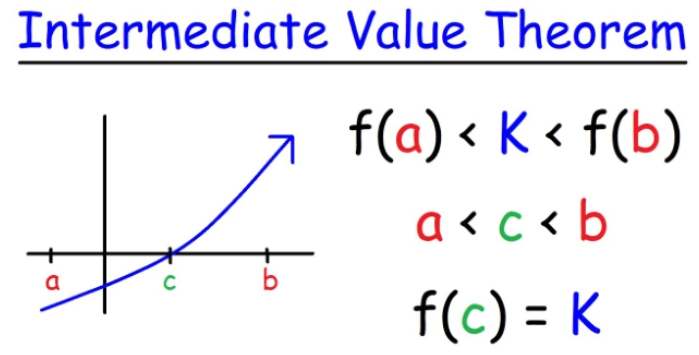
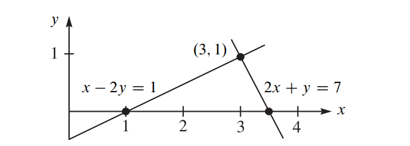
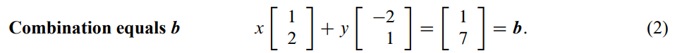
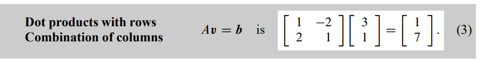
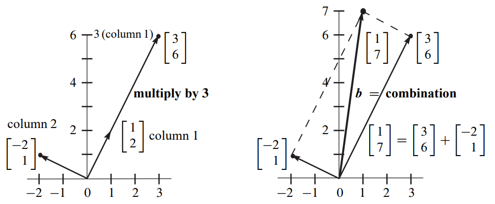

1. Matrix Interpretation#
1.1. Interpretation of equation sets#
Suppose we have the following equation sets

1.1.1. Row Picture#
Hard to draw when dimensions goes beyond 2

1.1.2. Column Picture#
Linear Combination of Columns



1.1.3. Quiz#
Q: Can I solve \( Av = b \) for every \( b \)? (means, Do the linear combination of the columns fill 3D space?)
My Answer: Yes, if vectors in \( A \) are not parallel, then they can be the basis for 3D space.
Professor’s Answer: If those three vectors lie within the same plane (which means you can get one vector from the linear combination of the other two vectors), then they can only form a plane instead of a 3D space.
1.2. Elimination#
A systematic way to solve the solution
1.2.1. Upper triangular matrix#
The most important purpose in elimination is from \(A→U\)(upper triangular matrix )
1.2.2. Augmented matrix#
Add y (response) into the x’s (parameters’) matrix
Method of Gaussian Elimination 3x3 Example
Given the system of equations:
We start with the augmented matrix:
Perform row operations to reduce to the row echelon form:
Further reducing to:
This yields the solution: $\( \begin{align*} x &= 2 \\ y &= 1 \\ z &= 3 \end{align*} \)$
1.2.3. Failure of Elimination#
Some pivot become 0, which means there are some vectors are parallel(dependent) to each other
1.2.4. Elimination matrix#
Use matrix to represent the elimination steps
$\( \begin{align*} E_{32}(E_{21}A) = (E_{32} \cdot E_{21})A = U \text{ (Associative law)} \end{align*} \)$\(E_{21}\) means elimination row 1 using row 2
Again, matrix * vector = the combination of the columns of the matrix, therefore, matrix * column = column, matrix * row = row.
1.2.5. Permutation matrix \(P\)#
Exchange the row
Exchange row 2 and row 1 \( \begin{bmatrix} 0 & 1 \\ 1 & 0 \end{bmatrix} \), example:
Exchange column 2 and column 1, example:
1.2.6. Inverse Matrix#
How we can reversing steps and transfer matrix from \(U \to A\)? (Inverse Matrix)
\(\begin{bmatrix} 1 & 0 & 0 \\ -3 & 1 & 0 \\ 0 & 0 & 1 \end{bmatrix}\) means subtract \(3 \times \text{row1}\) from row2. If we want to reverse the operation, we just need to add \(3 \times \text{row1}\) to row2. That’s why we could easily calculate the inverse matrix.
1.2.7. Quiz#
Linear Algebra #2
Consider a linear equations
Transform a matrix \( A = \begin{pmatrix} 2 & 2 & 3 \\ 1 & -1 & 0 \\ -1 & 2 & 1 \end{pmatrix} \) to an upper triangular matrix \( \begin{pmatrix} a_{11} & a_{12} & a_{13} \\ 0 & a_{22} & a_{23} \\ 0 & 0 & a_{33} \end{pmatrix}.\)
1.3. Yalin Conclusion#
1.3.1. Row interpretation is suitable for first matrix, column interpretation is for second matrix [行前列后]#
\(E_{row operation}*A=U\)
\(A*E_{column operation} = U\)
1.4. The meaning of Matrix pre-multiplication(矩阵左乘)#
- \[\begin{split} \begin{bmatrix} 1 & 0 \\ 0 & 1 \end{bmatrix} \begin{bmatrix} x_1 \\ x_2 \end{bmatrix} = \begin{bmatrix} x_1 \\ x_2 \end{bmatrix}, \end{split}\]
we can get that, in a plane with basis \((1,0)\), \((0,1)\), the vector \((x_1, x_2)\) remains the same.
According to this, we can say
\[\begin{split} \begin{bmatrix} a_{11} & a_{12} \\ a_{21} & a_{22} \end{bmatrix} \begin{bmatrix} x_1 \\ x_2 \end{bmatrix} = \begin{bmatrix} b_1 \\ b_2 \end{bmatrix} \end{split}\]indicates, after changing the plane basis from \((1,0)\), \((0,1)\) to \((a_{11}, a_{21})\), \((a_{12}, a_{22})\), the coordinate of vector \((x_1, x_2)\) becomes \((b_1, b_2)\).
Therefore, the matrix pre-multiplication is actually changing the basis.